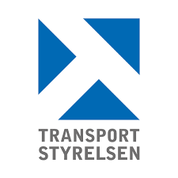

7 Okt, 2024 - Pågående
Lagerarbetare - Deltid
Danx AB
Ansvarig för utlastning av gods med truck, inklusive effektiv
hantering och placering.
Samarbeta nära med arbetsledningen för att koordinera mottagande av
leveranser, planera baserat på mängd och chaufförers ankomsttider.
Noggrant placera gods på dess specifika platser inom lagret, med fokus på
säkerhet och ordning.
19 Aug, 2024 - 20 Sep, 2024
Lagerarbetare - Deltid
ITS Logistikpartner AB
Hanterade och organiserade inkommande varor.
Plockade och packade beställningar enligt orderlistor för leverans.
Opererade lagerutrustning såsom truckar och palllyftare.
Skannade och registrerade varor för att säkerställa korrekt spårning.
Höll arbetsområdet rent och organiserat för effektiv verksamhet.
Följde säkerhetsföreskrifter och arbetsrutiner noggrant för att upprätthålla
en säker arbetsmiljö.
17 Juni, 2024 - 19 Juli, 2024
Lagerarbetare - (Sommarjobb)
Orkla Foods Sverige AB

Under sommaren arbetade jag som lagerarbetare hos Orkla AB, där jag ansvarade för sortering och paketering av varor för vidare distribution till matbutiker runt om i Sverige.
Mitt arbete inkluderade att plasta ihop varor och säkerställa att de var korrekt förberedda för transport.
Jag hanterade främst produkter som Fun Light, Ekströms och BOB, och bidrog till en effektiv och smidig lagerhantering.
1 Feb, 2024 - 31 Maj, 2024
Tulladministratör - Heltid
PostNord AB
Som tulladministratör jobbar jag i första hand med att lämna import-och
exportdeklarationer för kundräkning till Tullverket.
Tull Örebro ansvarar för
att allt gods blir godkänt innan det kan skickas vidare.
Arbetet innebär att
granska och registrera kunders fakturor i PostNords tullsystem.
I arbetet
har jag kontakt med medarbetare I PostNord på övriga terminaler, kunder
och myndigheter.
14 Aug, 2023 - 11 Dec, 2023
Extern Lagerarbetare - Heltid
Alligo
Hanterade in- och utlastning av varor, med fokus på effektivitet och
säkerhet.
Ansvarade för att stapla och plasta gods på ett organiserat och säkert sätt.
Skötte utskrift av etiketter och fästning av pallkragar, inklusive applicering
av etiketter.
3 Apr, 2023 - 27 Juli, 2023
Terminalarbetare SGT - Heltid
Postnord AB
Ansvarig för in- och utlastning av gods med truck, inklusive effektiv
hantering och placering.
Samarbeta nära med arbetsledningen för att koordinera mottagande av
leveranser, planera baserat på mängd och chaufförers ankomsttider.
Noggrant placera gods på dess specifika platser inom lagret, med fokus på
säkerhet och ordning.
24 Okt, 2022 - 5 Mars, 2023
Granskare - Deltid
Transportstyrelsen

Ansvarig för detaljerad granskning av trafikövervakningsbilder för att
identifiera fordon som begår överträdelser, såsom hastighetsöverträdelser
eller andra trafiklagbrott.
Specialiserad i att noggrant identifiera och dokumentera
registreringsnummer från kamerabilder under utmanande förhållanden
som dålig sikt eller snabbt rörliga fordon.
Arbetade nära med trafikövervakningsteam och polis för att säkerställa
korrekt och rättvis rapportering av trafiköverträdelser.
7 Juli, 2019 - 27 Sep, 2022
Lagerarbetare - Heltid
NTG Sweden AB
Hanterade och organiserade inkommande och utgående varor.
Plockade och packade beställningar enligt orderlistor för leverans.
Opererade lagerutrustning såsom truckar och palllyftare.
Utförde regelbundna inventeringar för att säkerställa korrekt lagerstatus.
Skannade och registrerade varor för att säkerställa korrekt spårning.
Höll arbetsområdet rent och organiserat för effektiv verksamhet.
Följde säkerhetsföreskrifter och arbetsrutiner noggrant för att upprätthålla
en säker arbetsmiljö.
Samarbetade med teamet för att uppnå dagliga produktionsmål.